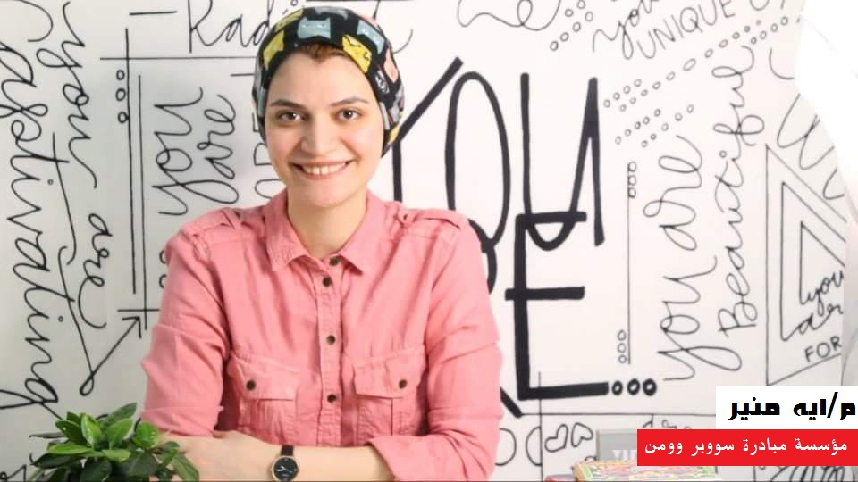

العنف ضد المرأة يشمل أي فعل يتسبب في إيذاء أو ضرر جسدي أو نفسي. يتضمن ذلك الاعتداء الجسدي، الاغتصاب، العنف الجنسي، التحرش ، العنف النفسي، التمييز، وغيرها من الأشكال الضارة للعنف. هذا النوع من العنف يؤثر سلبًا على صحة المرأة، وحقوقها، وقدرتها على المشاركة بالمجتمع بشكل كامل ومتكافئ، وتتخذ الدول عدة إجراءات لمكافحة وحل مشكلة العنف ضد المرأة وتشمل هذه الجهود : قوانين وسياسات ،توعية المجتمع وذلك بالإضافة الى المبادرات التي تتشارك نفس الأهداف في توعية وتثقيف المجتمع حول خطورة العنف ضد المرأة وعواقبه السلبية، وتقديم خدمات الدعم والمساعدة ، وغير ذلك وفيما يلي نتناول احد هذه المبادرات مبادرة "سوبر وومان" في حديثنا مع الأستاذة " أيه عبد المجيد" مديرة برامج المبادرة عن جهود المبادره واهم فعاليتها حيث أوضحت ان المبادرة عام 2016 اسستها المهندسة آيه منير وكانت في البداية تقتصر انشطتها على ندوات في الزقازيق، وبعد ذلك من خلال منصات التواصل الاجتماعي في مدة قصيرة استطاعت تحقيق شهرة وانتشار وهذا ما شجع مؤسسي المبادرة علي إكمالها وتطويرها، اما عن المبادرة فهي مبادرة نسوية تعمل علي معالجة قضايا النساء وخاصة العنف ضد المرأة بكل أنواعه في الشرق الأوسط وبالتحديد في مصر والإستجابة لأصواتهم من خلال وسائل مختلفة للدعم بهدف تحقيق العدالة الاجتماعية.
اهداف المبادرة
بالنسبة لأهداف المبادرة فهدفها الاساسي رفع وعي المجتمع والقضاء علي كل انواع العنف والتمييز ضد النساء سواء جسدي او نفسي او عنف اقتصادي او حتي اجتماعي، وايضا المطالبة بتطبيق القوانين العادلة والمُنجزة لإنصاف المرأة المُعنفَة، ورؤيتنا هي التطلع لبناء مجتمع آمن للسيدات خالي من العنف والأحكام والتمييز والجرائم و بناءً عليه نُنشئ جيل واعي قادر علي الإرتقاء بنفسه والتحسين من اوضاعه.
نشاط المبادرة في المحافظات
وأوضحت عبد المجيد انه "فيما يخص المحافظات نحن نعمل في القاهرة ، و بما أن بدايتنا كانت في الزقازيق فبطبيعة الحال نعمل ايضا بها ، بالإضافة الي عملنا في الأسكندرية ، وحاليا نعمل علي توجيه مبادرتنا في بعض المحافظات الأخري كمطروح والشرقية. كما يتم التعاون مع مؤسسات شريكة محلية موجودة في القاهرة من ضمنها مؤسسة براح آمن، ومؤسسة المرأة الجديدة ، ومؤسسة سِولة ، وبيننا الكثير من الشراكات، أما بالنسبة للتعاون الدولي فنحن نعمل حالياً للإشتراك مع بعض المؤسسات الدولية. حيث تعمل المبادرة قائمة علي فكرة التطوع ، فجميعنا متطوعين سواء الادارة او الأعضاء، فهناك مستفيدات من البرامج والفاعليات التي قمنا بها أصبحوا يعملون الآن في فريقنا ، فمثلا واحدة من الفتيات اللاتي تعرضن للعنف الإلكتروني والتي قمنا بمساعدتها اصبحت تعمل في فريقنا، ودورها هي مساعدة من تعرضوا للعنف الرقمي نفسياً لتخطي الأمر وإخبارهم بقصة نجاحها في تخطي هذه المشكلة".
وفي الختام كشفت عبد المجيد عن طموحها في ان تصبح المبادرة مؤسسة وليس فقط مبادرة ، حتي نستطيع العمل بشكل فعال اكثر وبشكل منظم اكتر علي نطاق اوسع، وايضا نعمل علي تأسيس بعض البرامج فالآن قمنا بتأسيس اول عيادة للسلامة الرقمية والامان الرقمي تسمي " سلامة" ونعمل علي بعض البرامج الأخري كبرنامج "نجاة" والذي يهدف الي تشجيع المرأة المعنفة.
- حوار صحفي مع الأستاذة " أيه عبد المجيد" مديرة برامج المبادرة
- مصدر الصور من صفحة مبادرة سوبروومن على الفيس بوك